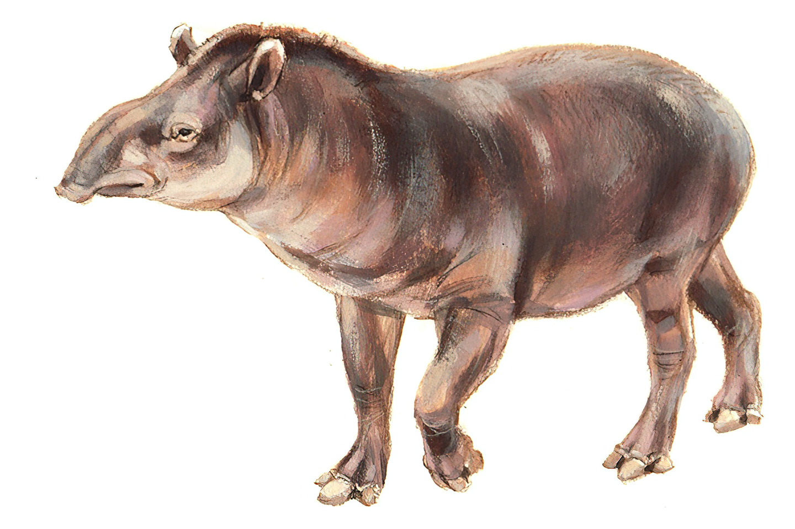
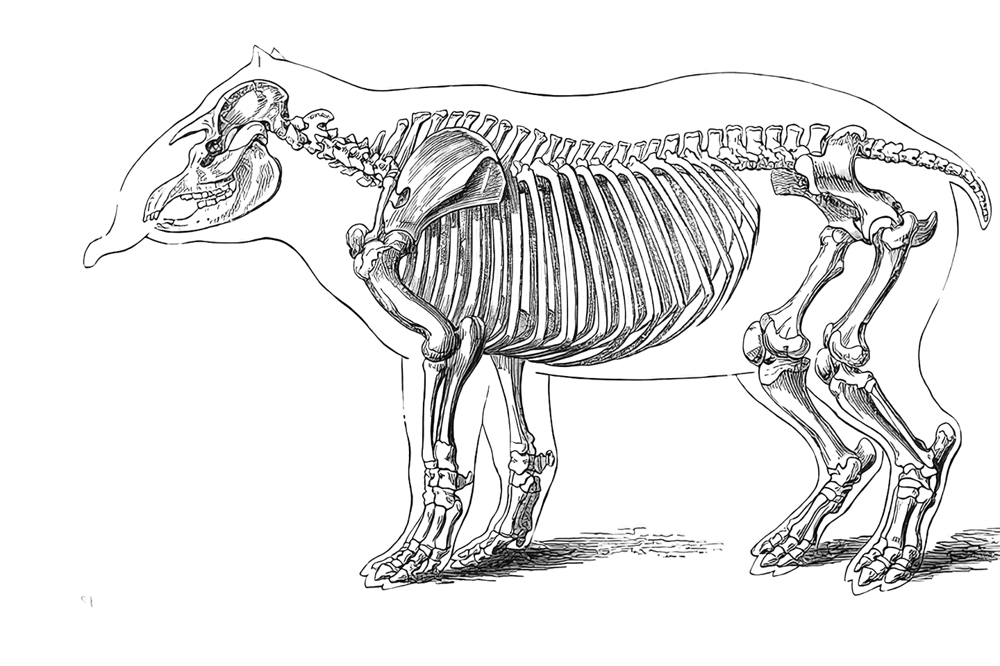

Jardinero de la Selva
Son vitales en la diversidad y riqueza de bosques en los que habitan, ya que dispersan semillas en sus fecas. Además, al ser selectivos con sus alimentos, pueden manipular qué tipo de vegetación crece en el lugar.
Familiares
A primera impresion parecen ser parientes de el elefante o un oso hormiguero, en realidad sus parientes mas cercanos serian el caballo y el rinoceronte
Esqueleto

